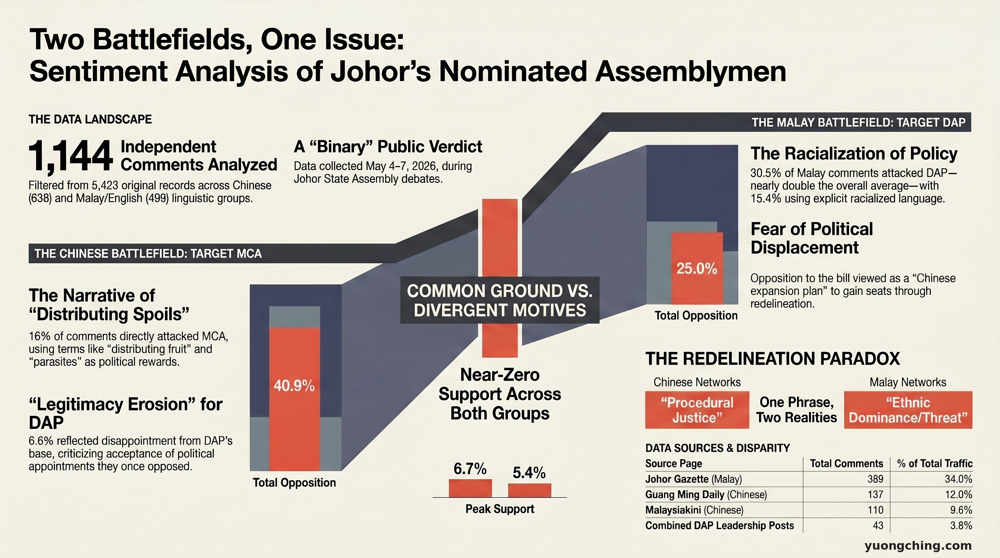

When the Johor State Assembly passed its constitutional amendment on 7 May 2026 — formally adding 5 appointed assemblymen — the political debate was still ongoing. But in the Facebook comment sections, a verdict had already been delivered. And the Chinese and Malay communities had reached completely different verdicts on the same issue.
The Data

This analysis draws on 33 public Facebook posts published during the Johor constitutional amendment debate (4–7 May 2026). After deduplication across two raw datasets, the sample comprises 1,144 independent comments — 638 in Chinese and 499 in Malay/English. Sources include Mandarin outlets (Guangming Daily, Nanyang Siang Pau, Malaysiakini Chinese), Malay-language pages (Johor Gazette, MyJohor), and the personal accounts of DAP and PKR elected representatives.
Support for the appointed assemblyman policy was below 7% in both communities — the one point of clear agreement. But who they were opposing, and what they were opposing, led them to completely different battlegrounds.
The Chinese comment section: MCA is the target, not the policy
Among the 638 Chinese comments, the dominant narrative was not about the appointed assemblyman system itself. 16% of comments directly attacked MCA — particularly Youth Chief Lim Thian Soon. "Big-mouth Soon", "crybaby Soon", "running dog", and "dividing the spoils" were high-frequency terms. In a single Guangming Daily post with 137 comments, 23.4% attacked MCA and 19% used a "corruption/patronage" framing.
Notably, criticism of DAP also appeared — but not from the opposition camp. It came from within the Pakatan Harapan base, as a form of legitimacy erosion:
This category — comprising 6.6% of Chinese comments — represents internal base disillusionment, not opposition manipulation. It is legitimacy erosion from within.
The Malay comment section: the appointed ADUN issue disappears, DAP becomes the battlefield
Malay-language comments presented a completely different political ecosystem. 30.5% of Malay comments attacked DAP — nearly double the overall figure of 17%. In the single highest-traffic post (Johor Gazette, 389 Malay comments), the DAP attack rate reached 37.5%, with 15.4% of comments containing racialised language.
The original content of this post was a report on Liew Chin Tong's position — proposing electoral redelineation as an alternative to appointed assemblymen.
One proposal, two completely different receptions
| Framing | Chinese community reception | Malay community reception |
|---|---|---|
| "Electoral redelineation as alternative" | Procedural justice — technical, depoliticised | Chinese political dominance expansion — racial, threatening |
| Main target of criticism | MCA (Lim Thian Soon specifically) | DAP (racialised framing) |
| Internal base criticism | 6.6% — PH legitimacy erosion | Minimal |
| Racialised language | Rare | 15.4% (Johor Gazette post) |
The visibility gap
A single Johor Gazette post generated 389 comments — 34% of total traffic. Three DAP posts combined generated only 43 comments — 3.8% of total traffic. In the Malay-language social media space, DAP's opposition position is nearly invisible. What exists instead is an attack narrative about DAP.
Key finding: Both communities opposed the appointed assemblyman policy — but they were fighting completely different battles. The core tension in this data is not the intensity of emotion, but the fact that the same proposal produced completely opposite reception effects in two language communities. "Electoral redelineation" as an alternative was received as procedural justice in Chinese networks and as a racial expansion plan in Malay networks. This gap was not created by either side. But it is real, and it left clear data traces in the comment sections.
Methodology note
This analysis is based on 1,144 independent comments after cross-file deduplication. Sentiment and thematic classification used keyword-rule annotation with manual sampling validation (minimum 30 per category). 59.8% of comments were not explicitly classified — manual sampling indicates most are implicit criticism or satirical comments, but these are maintained as "unclassified" as they cannot be systematically verified. Facebook commenters represent more vocal active users and do not represent the full electorate.